2 minutes
- Install OpenStack AIO with Kolla-Ansible in Ubuntu
Specification : OpenStack Yoga, Kolla-ansible, Ubuntu, All-in-one
Lab Topology
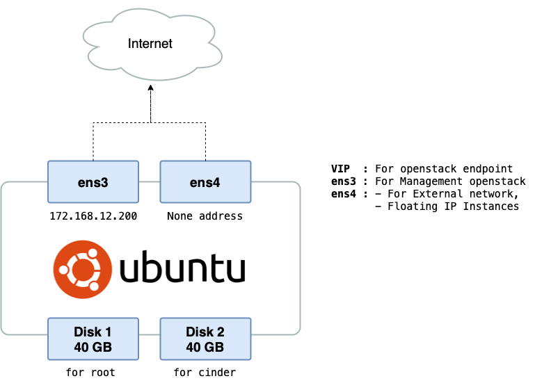
| Specs | Value |
|---|---|
| OS | Ubuntu 20.04 |
| vCPU | 4 |
| RAM | 8GB |
| Storage 1 | /dev/vda 40 GB |
| Storage 2 | /dev/vdb 40 GB |
Before start
Makesure your environment already here :
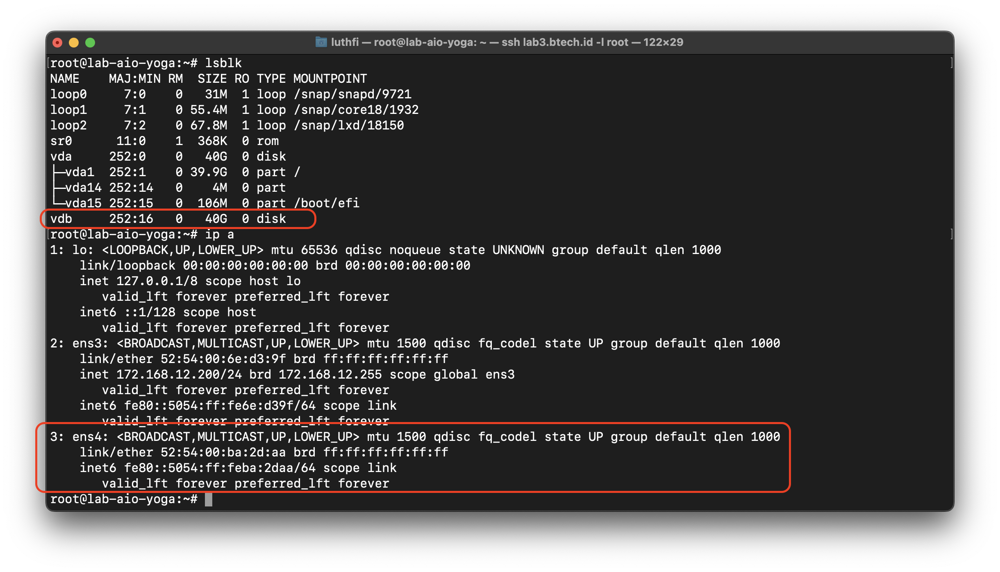
Installation
Update Environment
sudo apt update
Create VG for cinder-backend (volume instances)
pvcreate /dev/vdb
vgcreate cinder-volumes /dev/vdb
vgs
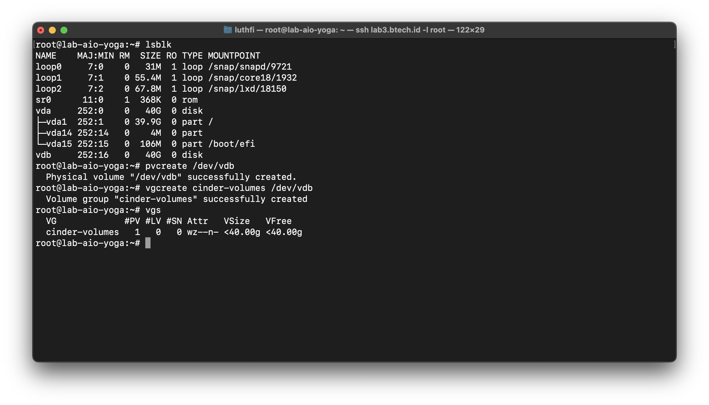
Install depedencies
sudo apt install python3-dev libffi-dev gcc libssl-dev python3-venv
Create virtual environment (venv) for openstack installation
python3 -m venv openstack-yoga
source openstack-yoga/bin/activate

Install Pip & Ansible
For openstack yoga version, you need install ansible version like bellow
pip install -U pip
pip install docker
pip install 'ansible>=4,<6'
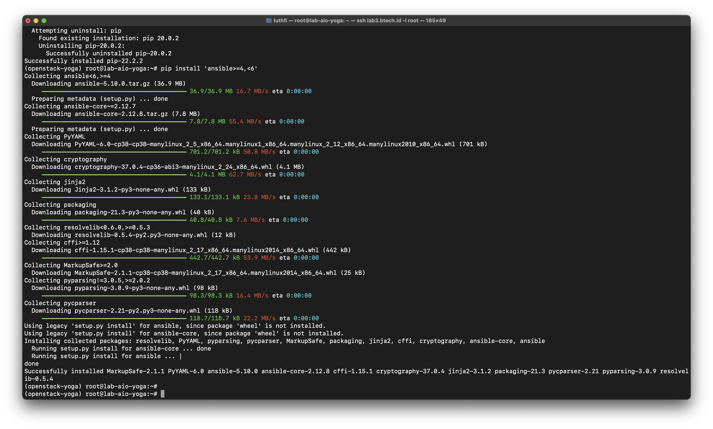
Install Kolla
pip install kolla-ansible==14.2.0
Create kolla directory and copy file needed
mkdir /etc/kolla
cp -r openstack-yoga/share/kolla-ansible/etc_examples/kolla/* /etc/kolla
cp openstack-yoga/share/kolla-ansible/ansible/inventory/* .
mv /etc/kolla/globals.yml /etc/kolla/globals.yml.bak
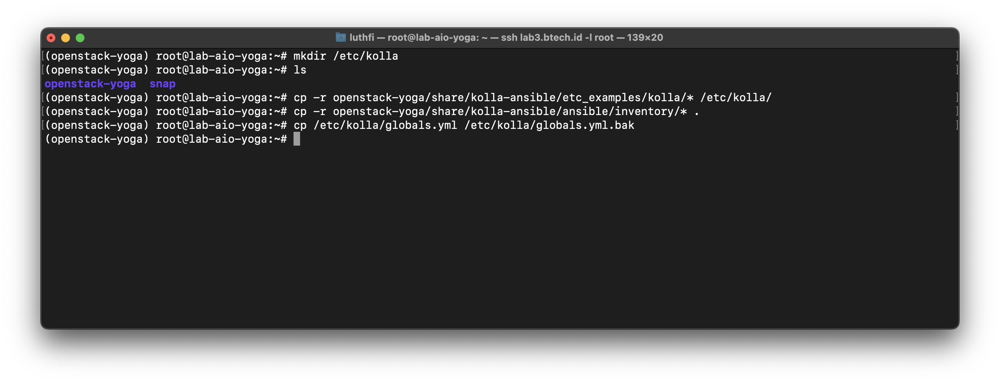
Configure global configuration
You can configure base on you needed, but for minimal and in this scenario like bellow :
nano etc/kolla/globals.yml
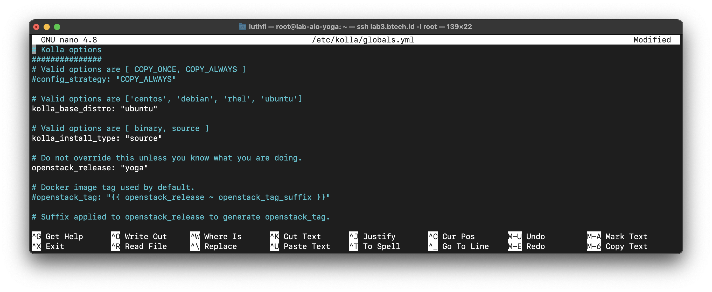
Follow bellow guide :
kolla_base_distro: "ubuntu"
kolla_install_type: "source"
openstack_release: "yoga"
kolla_internal_vip_address: "172.168.12.100"
network_interface: "ens3"
neutron_external_interface: "ens4"
neutron_plugin_agent: "openvswitch"
api_interface: "ens3"
enable_keystone: "yes"
enable_neutron_trunk: "yes"
enable_cinder: "yes"
enable_cinder_backup: "no"
enable_cinder_backend_lvm: "yes"
enable_horizon: "yes"
enable_neutron_provider_networks: "yes"
Prepare & setup ansible
mkdir /etc/ansible
nano /etc/ansible/ansible.cfg
add value like bellow :
[defaults]
host_key_checking=False
pipelining=True
forks=100
Generate Kolla-Password
kolla-genpwd
OpenStack yoga installation
ansible -i all-in-one all -m ping
kolla-ansible install-deps
If you have error installation like bellow you just need install packages, then continue again :
apt install --reinstall ca-certificates
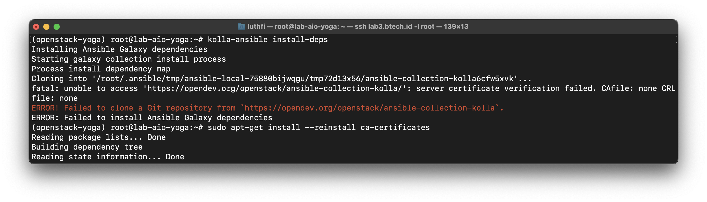
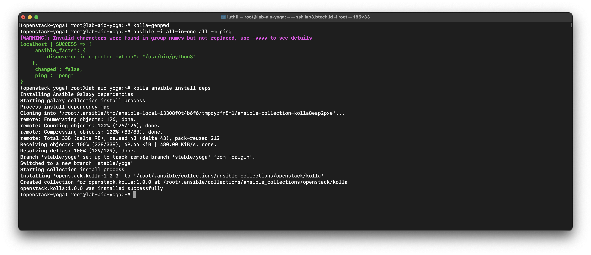
Next, bootstrap & deploy openstack
Makesure all deployment not have issue :
kolla-ansible -i all-in-one bootstrap-servers
kolla-ansible -i all-in-one prechecks
kolla-ansible -i all-in-one deploy
kolla-ansible -i all-in-one post-deploy
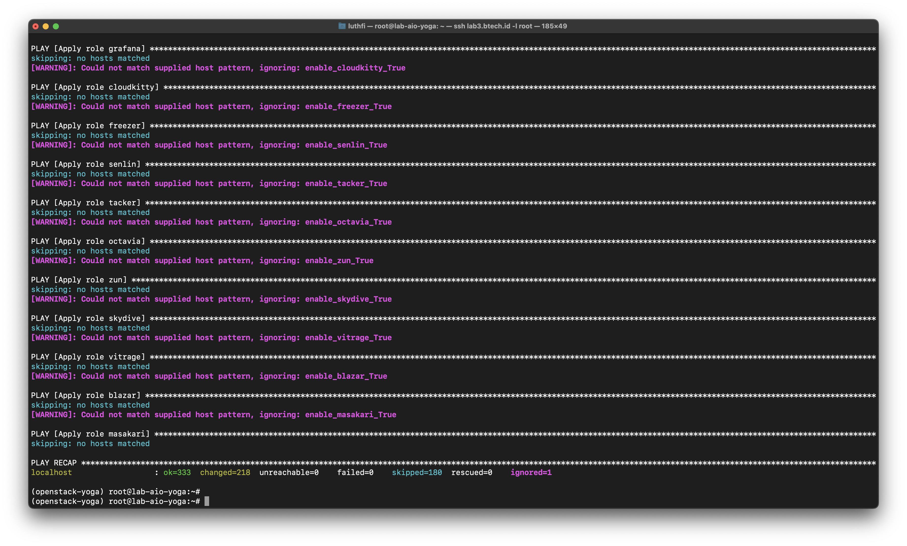
Verify
Verify all container up
docker ps
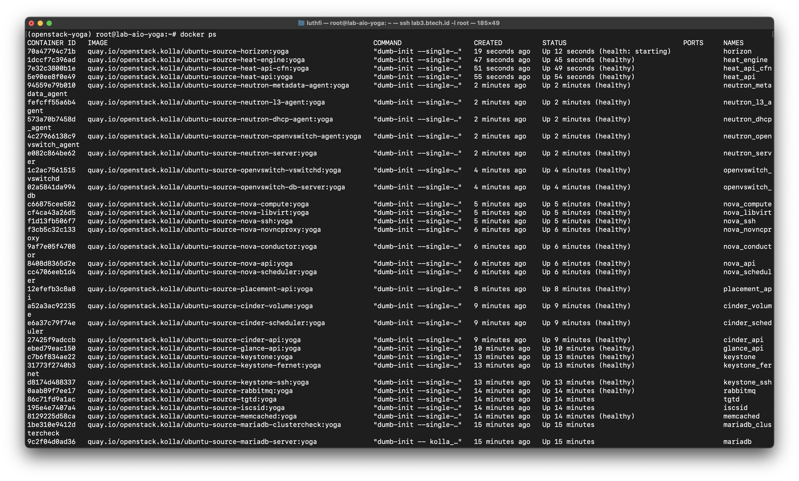
Get openstack horizon password
cd /etc/kolla
grep keystone admin password /etc/kolla/passwords.yml
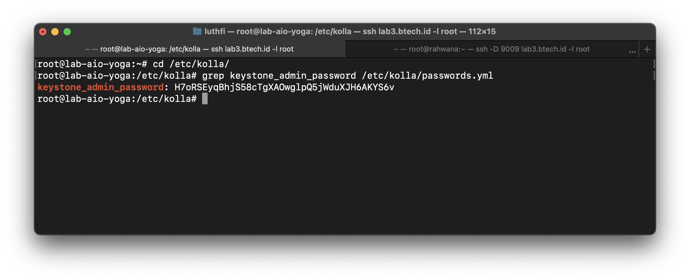
Open Dashboard
Input VIP address, and paste your password from previous :

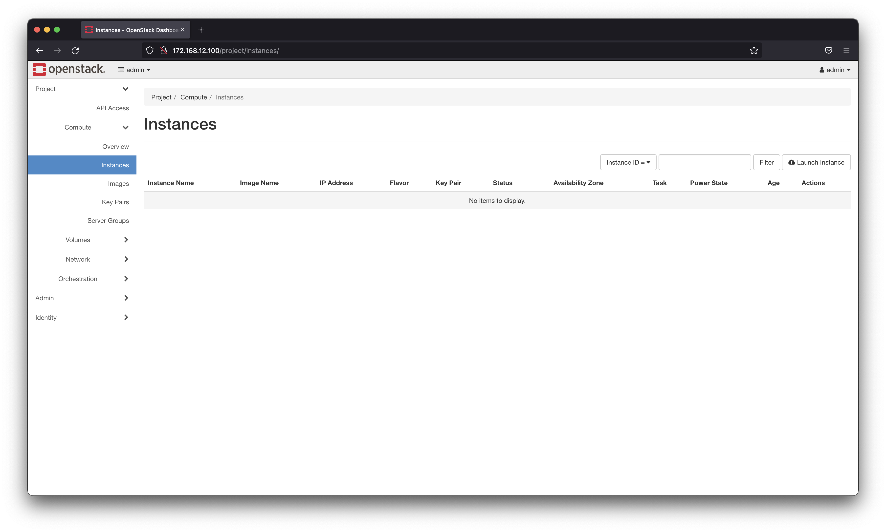
Install openstack-client to manages with CLI
pip install python-openstackclient
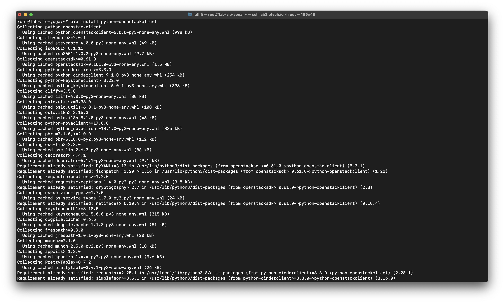
Use openstack CLI
cd /etc/kolla
source admin-openrc.sh
openstack server list
Next, Creating Instances
For create instances, you can check next post
Reference :
https://docs.openstack.org/project-deploy-guide/kolla-ansible/yoga/quickstart.html
324 Words
2021-01-02 07:00 +0700